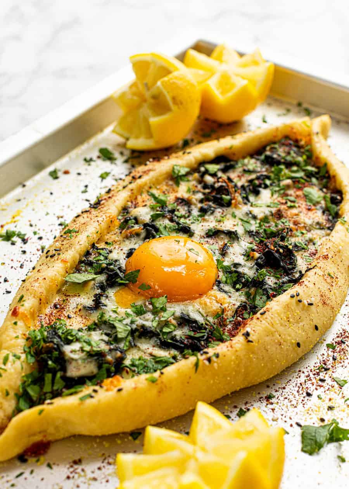

"Unveiling Flavors Through Time: The Epic Saga of Pide"
Pide is a traditional Turkish dish that can be likened to a Turkish-style pizza or flatbread. Its history dates back centuries to ancient Anatolia, where it was initially a simple baked dough topped with ingredients like herbs, meat, and vegetables.
Pide evolved over time, influenced by various cultures and regions, including Persian, Arab, and Mediterranean cuisines.
In the Ottoman era, it became more popular and diverse.
Different regions of Turkey developed their unique variations of pide, using local ingredients and cooking methods.
Today, pide is a staple in Turkish cuisine, with various types, such as Kiymali (with minced meat), Kusbasili (with sliced lamb), Karisik (mixed toppings), and more.
It's enjoyed both as street food and in restaurants worldwide, showcasing Turkey's rich culinary heritage.
"Bringing Pide to your kitchen"
Pide is a delicious Turkish flatbread typically topped with a variety of ingredients. Here's a recipe for a classic Kiymali Pide, which is topped with a flavorful minced meat mixture. You can customize the toppings to your preference.
Elevate Your Dish with Exceptional Ingredients
For the Dough:
1. 2 1/4 teaspoons (1 packet) active dry yeast
2. 1 teaspoon sugar
3. 1 cup warm water (about 110°F or 43°C)
4. 2 1/2 cups all-purpose flour
5. 1 teaspoon salt
6. 2 tablespoons olive oil
For the Kiymali (Minced Meat) Topping:
7. 1/2 pound (250 grams) ground beef or lamb
8. 1 small onion, finely chopped
9. 2 cloves garlic, minced
10. 1 teaspoon paprika
11. 1/2 teaspoon cumin
12. Salt and pepper to taste
13. 1 tablespoon olive oil
14. 1/2 cup chopped tomatoes
15. 1/4 cup chopped bell peppers (green or red)
16. Chopped fresh parsley for garnish
Let's chop, simmer, and sauté our way to gastronomic glory!
Prepare the Dough:
1. In a small bowl, combine warm water, sugar, and yeast. Let it sit for about 5-10 minutes until it becomes frothy.
2. In a large mixing bowl, combine flour and salt. Pour in the yeast mixture and olive oil.
3. Mix until a dough forms. Knead the dough on a floured surface for about 5-7 minutes until it becomes smooth and elastic.
4. Place the dough in an oiled bowl, cover it with a damp cloth, and let it rise in a warm place for about 1-2 hours or until it doubles in size.
Prepare the Kiymali Topping:
1. In a skillet, heat olive oil over medium heat. Add the chopped onion and garlic and sauté until they become translucent.
2. Add the ground beef or lamb and cook until it's browned and crumbly.
3. Add the paprika, cumin, salt, and pepper. Stir to combine.
4. Add the chopped tomatoes and bell peppers. Cook for another 5-7 minutes until the mixture is cooked through and the flavors meld together. Remove from heat and set aside.
Assemble and Bake the Pide:
1. Preheat your oven to 475°F (245°C) or as high as it goes. Place a pizza stone or baking sheet in the oven to preheat as well.
2. Punch down the risen dough and divide it into 2-3 equal portions, depending on how large you want your pides.
3. Roll out each portion into an oval or boat-like shape on a floured surface.
4. Transfer the rolled-out dough to a piece of parchment paper.
5. Spoon the Kiymali topping evenly onto each dough, leaving a border around the edges.
6. Fold the edges of the dough up to partially cover the filling, creating a boat-like shape.
7. Slide the parchment paper with the pides onto the preheated pizza stone or baking sheet.
8. Bake for about 12-15 minutes or until the edges of the pide are golden brown.
Serve:
1. Garnish with chopped fresh parsley.
2. Slice and serve hot. Enjoy your homemade Kiymali Pide!
Feel free to customize the toppings with ingredients like cheese, olives, and eggs to create your unique pide variations.